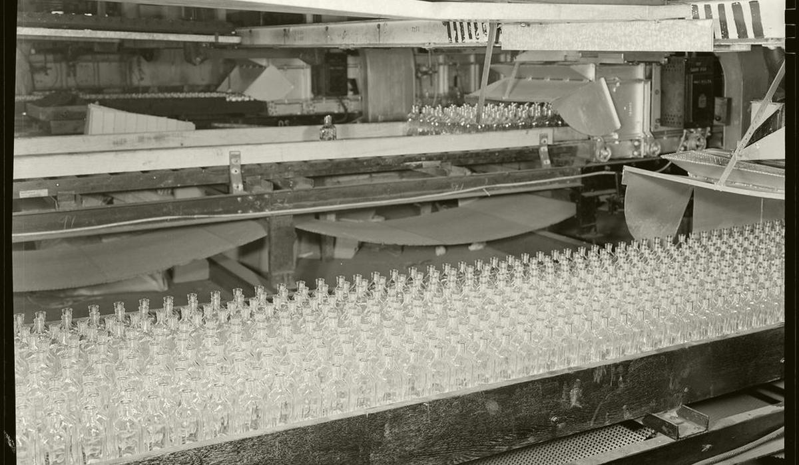

How to approach brewery data and AI on Google Cloud
BigQuery is a fine home for brewery data. What it cannot do for you is decide which brew number, tank and packaging lot belong together. That part is still the brewery's job.

Can a brewery run its data and AI on Google Cloud?
Yes. A brewery whose sales data, e-commerce or group reporting already lives on Google Cloud can build its brewery data and AI work there. BigQuery handles the volumes a brewery produces without strain. Google's AI tools can forecast, flag and answer questions over the records. The cloud is rarely what stands between a brewery and a trustworthy number. The missing join between the brewhouse log, the cellar log, the filler and the lab book is.
To be straight about my position: Beer365 runs on Microsoft Azure and Microsoft Fabric, inside the brewery's own Microsoft tenant. This article still starts with how to do brewery data well on Google Cloud, because that advice holds whichever tool sits on top. The last part covers how Fabric can read the same data without moving it.
How a brewery should approach data and AI on Google Cloud
| Brewery need | Google Cloud service | What it does for the brewery |
|---|---|---|
| Landing raw files | Cloud Storage | Holds ERP extracts, lab exports, distributor files and historian dumps in buckets |
| The batch record and reporting tables | BigQuery | The warehouse where brewhouse, cellar, packaging, lab and sales tables are joined and queried with SQL |
| Forecasts and anomaly flags | BigQuery ML | Creates and runs machine learning models with SQL, including ARIMA_PLUS for time-series forecasting and anomaly detection with seasonality and holidays |
| GenAI over batch records and SOPs | Gemini Enterprise Agent Platform (the product previously called Vertex AI) | Grounding connects model output to verifiable sources and returns links to them |
BigQuery ML is the piece I would show a brewery's supply chain team first. Demand for beer is seasonal, holiday-shaped and promotion-shaped. ARIMA_PLUS models handle seasonality and holiday effects. They run where the sales data already sits, written in SQL that an analyst can read. No separate data science platform, no extra copy of the data.
For floor data, plan the route before the tags. Process historians and PLCs speak OPC UA or MQTT on site. Google's connected-device architecture guidance describes using an MQTT broker or a fuller IoT platform product to bring device data in. Either way, land a per-batch summary in BigQuery rather than pointing every report at the raw stream. The cellar manager wants minutes out of profile per tank, not a billion readings.
Breweries that land on Google Cloud often arrive through the commercial side: e-commerce, distributor portals, marketing data. That shapes where AI pays first. Demand forecasting by SKU and channel, account-level depletion trends and promotion lift are natural first projects, because the data is already in BigQuery and the money is visible in stock-outs and write-offs. The production side usually follows later, once someone asks why the forecast was right and the beer still was not in the warehouse. That question needs brewhouse and cellar data in the same place as the sales data.
A worked example: a festival week forecast
Say a brewery sells a wheat beer that averages 800 hL a week. Three years of weekly sales in BigQuery show it rising for a regional festival. An ARIMA_PLUS model with the holiday calendar forecasts 1,200 hL for the festival week. Stock on hand is 3,000 hL.
cover (weeks) = stock on hand / forecast weekly demand = 3,000 hL / 1,200 hL = 2.5 weeksAt the normal 800 hL a week the same stock reads as 3,000 / 800 = 3.75 weeks.
The gap between 3.75 weeks and 2.5 weeks is the gap between a relaxed planner and a brewhouse that should have brewed a fortnight ago. A wheat beer brewed today will not be packaged for a couple of weeks at best. The forecast only helps if it reaches the brewing plan in time, which is why it belongs in the same tables the planner reads, not in a separate notebook.
The forecast is also only as honest as the sales history. If depletions and shipments are mixed in one column, or a stock-out week is recorded as low demand, the model learns that festivals are quieter than they are. Clean that first.
Keep units and time zones explicit from the first load. BigQuery will happily store gravity in °Plato from one source and specific gravity from another in the same column if nobody stops it. Name columns with their units, convert at the silver layer and record the conversion rule in the table description where every analyst will see it.
What Google Cloud will not do for a brewery
- Map the batch keys. One fermentation packaged into three SKUs, a blend from two tanks, a re-worked lot. Only the brewery knows these rules.
- Separate brewed, packaged and sold volume. All three get called production. They need three named measures.
- Fix the sensors. A model trained on a probe reading high learns the error. Keep calibration records beside the data.
- Do the duty maths in a language model. Excise and ABV figures belong in tested formulas. A grounded assistant can quote the result with its source.
With the batch record built, grounding a Gemini model on batch records and SOPs gives a quality team search with sources: what happened the last three times this yeast stalled, with the batch numbers attached. Without it, the same assistant gives tidy answers about the wrong batch.
Build it in stages. Start with one question, such as stock cover for the top ten SKUs, with the two or three tables it needs. Agree the definitions with the planner and the finance team before writing a model. Add the cellar and packaging tables next so the forecast can be checked against what the brewery can actually produce. Each stage should end with a number used in a weekly meeting. If nobody uses it, stop and ask why before adding more data.
Can Microsoft Fabric read brewery data on Google Cloud?
Yes, in two ways. The first is a OneLake shortcut to Google Cloud Storage. It points at the bucket without copying the data. Microsoft documents GCS shortcuts as read-only, authenticated with an HMAC key for a user or service account that has storage.objects.get and storage.objects.list on the bucket. Fabric can cache shortcut files for between 1 and 28 days to reduce egress costs from cross-cloud reads.
The second is mirroring Google BigQuery into Fabric, which Microsoft lists as generally available. Mirroring continuously replicates chosen BigQuery tables into OneLake as Delta tables. Microsoft states the Fabric compute for replication is free and storage is free up to a limit set by the capacity, while BigQuery's own change data capture and storage costs still apply on the Google side. Any granular security set in BigQuery must be set again in Fabric. Microsoft also notes that BigQuery reflects changes with a delay of around ten minutes, so this is a near real-time copy, not a live one.
Which to use depends on where the shaped data lives. Batch tables in BigQuery suit mirroring. Files in buckets suit shortcuts. Beer365 can sit on either: it reads the brewery's Google Cloud data through Fabric, builds the one batch record inside the brewery's Microsoft tenant and answers questions with the batch records cited.
Questions people ask
Is Google Cloud good for brewery analytics?
Yes. BigQuery can hold and join brewhouse, cellar, packaging, lab and sales tables. BigQuery ML can build forecasting and anomaly detection models in SQL. The brewery still has to map batch keys and agree definitions.
Can BigQuery ML forecast beer demand?
Yes. BigQuery ML's ARIMA_PLUS model is built for time-series forecasting and handles seasonality and holiday effects, which suits weekly beer sales by SKU, provided stock-out weeks are not mistaken for low demand.
Can Microsoft Fabric read data from BigQuery or Google Cloud Storage?
Yes. Fabric can mirror BigQuery tables into OneLake as Delta tables and can create read-only OneLake shortcuts to Google Cloud Storage buckets without copying the data.
Do we need to leave Google Cloud to use Beer365?
No. Beer365 runs on Azure and Microsoft Fabric but can read brewery data held in Google Cloud Storage or BigQuery through shortcuts or mirroring.
Part of the Beer365 solution for across the whole brewery.

Written by Ankur Napa
R&D brewer at United Breweries, SABMiller and AB InBev, then a data scientist on AI and generative AI for AB InBev's global business units. MSc Brewing Science and Technology, MSc Data Science and AI, Microsoft Certified Fabric Analytics Engineer. He leads Beer365 at Disruptive Advantage.
+91 7755 909445 · ankur.napa@disruptive-advantage.com
Ankur on LinkedIn · Talk to Ankur
Keep reading
More on across the whole brewery
 Across the whole brewery
Across the whole breweryWhere AI in brewing earns its keep across the whole brewery
AI in brewing works when it answers a question someone on the floor or in finance already asks. It fails when it starts with the model instead of the batch.
 Across the whole brewery
Across the whole breweryThe beer data your brewery already has and does not use
Most breweries do not need more data to start. Brew sheets, lab books, the historian, the ERP, the excise register and sales files already hold the answers. They just never meet.
 Across the whole brewery
Across the whole breweryHow to approach brewery data and AI on AWS if you already run there
If your brewery already runs on AWS, there is no reason to move to get value from its data. The hard work is the same on every cloud: one batch record and agreed definitions.
Bring one week of brew sheets
We will show you where the beer went, on a call, before anyone signs anything.
Or talk to Ankur directly: +91 7755 909445 · ankur.napa@disruptive-advantage.com